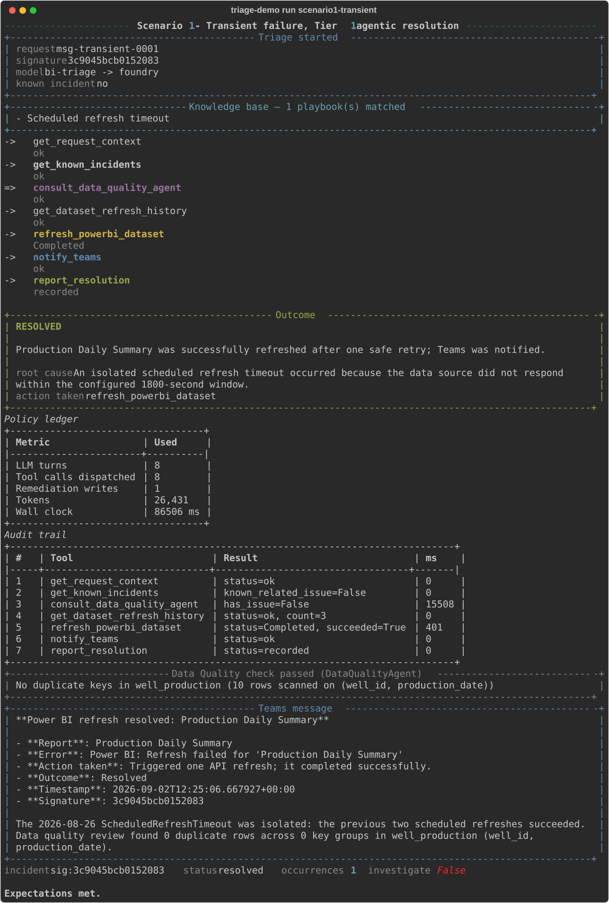
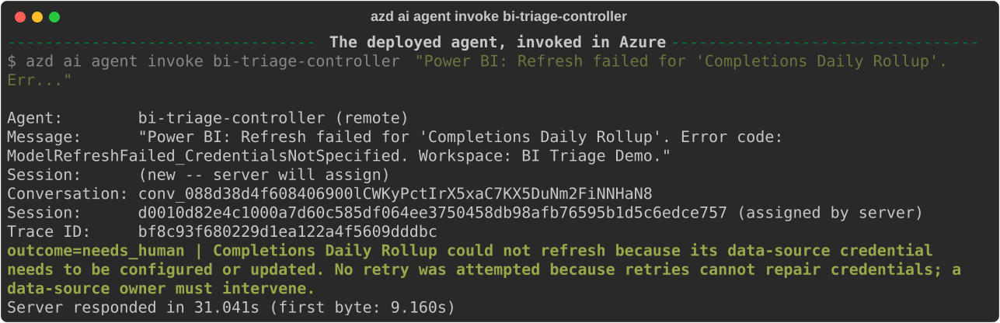
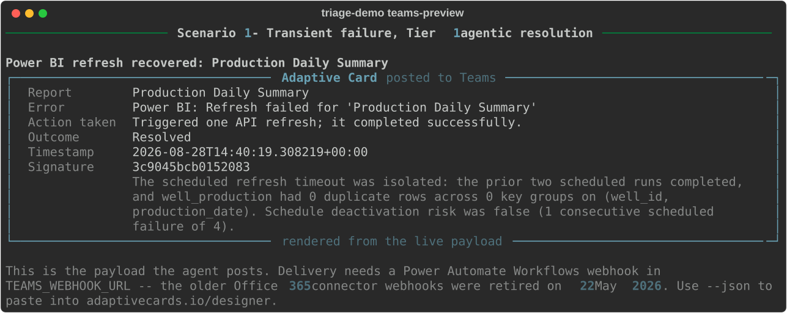
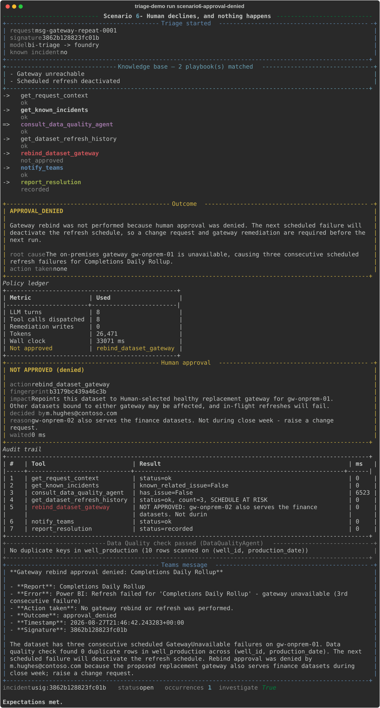
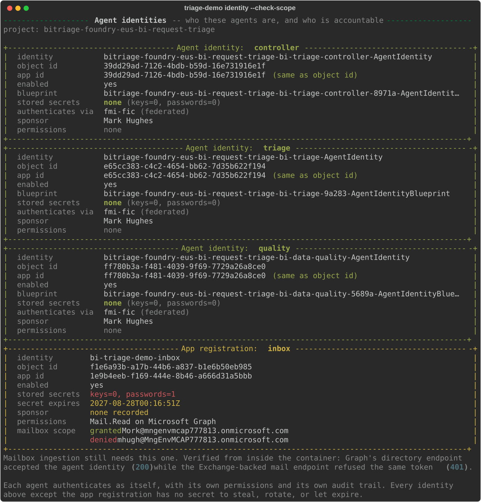

The companion document to the technical walkthrough. Same system, same runs, told from the point of view of the people it affects rather than the components it is built from.
Three parties. Two of them are people, and the demo is really about how little of their time this costs.
| Who | What they care about | What they see today |
|---|---|---|
| Priya Finance analyst |
That the number in front of her is today's number. | A report that looks fine and is quietly a day stale — the worst failure mode, because nothing is obviously broken. |
| Sam BI platform engineer, on call |
Not being paged for things that fix themselves, and being paged for things that don't. | An alert mailbox nobody reads, and a Monday spent reconstructing what happened at 06:02. |
| The agent bi-triage-controller |
Following the rules it was given. | Everything: the alert, the refresh history, the data, the incident record. |
On the names. Priya and Sam are roles, not accounts in the tenant. Everything shown below is a real captured run against real services — the reasoning, the Power BI calls, the incident records and the identities are all live. Only the two human names are stand-ins, so the document can be reused without putting a customer's staff in it.
The whole point is the gap between the second and third rows. Today that gap is measured in hours and usually starts with someone noticing a number looks wrong.
| Time | What happens | Who is involved |
|---|---|---|
06:02 | Scheduled refresh fails. Gateway timeout. | nobody |
06:03 | Power BI emails the alerts mailbox. | nobody |
06:05 | The agent is invoked and reads the alerts mailbox. | the agent |
06:05 | It checks whether this failure is already known, reads the refresh history, and asks the data quality agent whether the underlying data is sound. | the agent |
06:06 | One retry, verified. Or: escalation, with the evidence attached. | the agent |
08:30 | Priya opens the report. It is current. She never learns any of this happened. | Priya |
08:30 | Sam reads one notification that says what broke, what was done and why — or a request for a decision, if the agent was not allowed to act alone. | Sam |
A transient gateway timeout. The failure is isolated, the data is sound, and one retry is the correct answer. This is the majority of real alerts, and it is the case that wastes the most human time today.

Priya's morning: unchanged. That is the entire outcome, and it is the point.
Sam's morning: one notification, already resolved, with the evidence attached.
Some failures cannot be fixed by retrying, and some fixes are too consequential to make unattended. The agent is not allowed to decide which of those it is.


Being straight about this one. The card above is generated from the payload the agent really produces, but delivery to a channel is not wired in this build — Microsoft retired the old Teams webhook connectors on 22 May 2026 and the replacement has to be created by hand. It is a two-minute step, documented in the run sheet. Nothing else on this page is pending.
Some actions require a human to agree first. The interesting half of an approval is what happens when the answer is no — that is where an agent either respects the boundary or works around it.

The question every security review asks, and the one most agent demos cannot answer. It is worth knowing what the agent is before deciding what it may do.

| Today | With this running | |
|---|---|---|
| Priya | Opens a stale report and cannot tell. Or spots it, and loses a morning chasing whether the number is real. | Opens a current report. Learns nothing about any of it. |
| Sam | An alert mailbox nobody reads. Reconstructs 06:02 from logs, hours later. | One notification per genuine incident, with the evidence and the reasoning attached, and a decision to make only when a decision is actually needed. |
| Whoever asks later | "I think it was the gateway?" | Every terminal outcome recorded — including the refusals, the crashes and the declined approvals. |
The claim being made is narrow, deliberately. This does not fix your data platform. It removes the gap between something breaking and somebody competent looking at it, and it makes the routine cases stop consuming attention — while refusing, loudly and in writing, to make the consequential ones on its own.